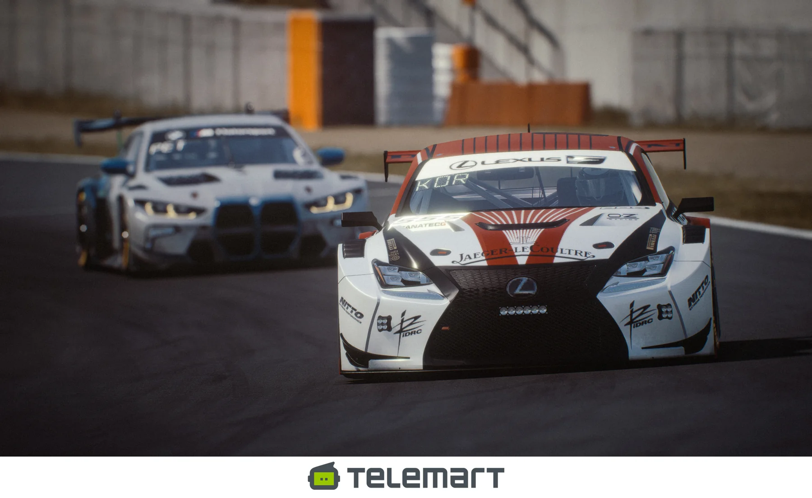
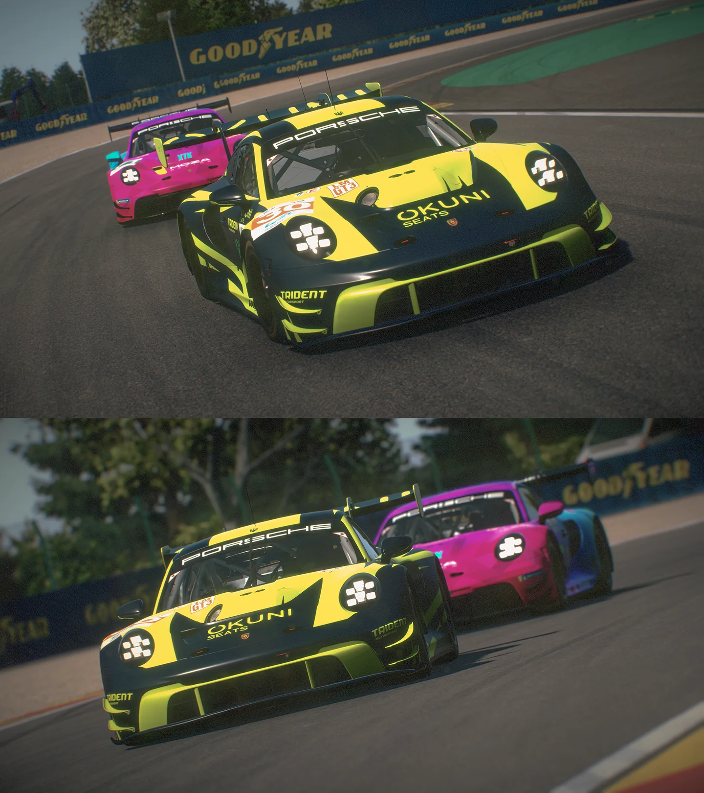
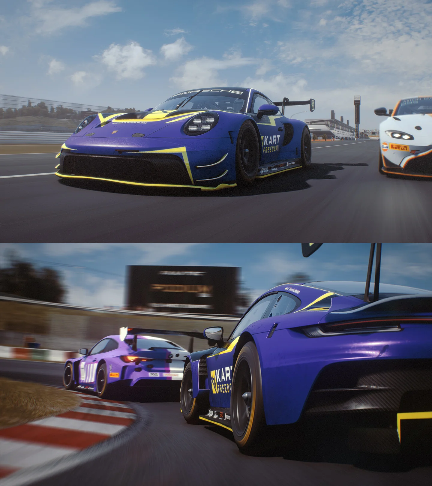
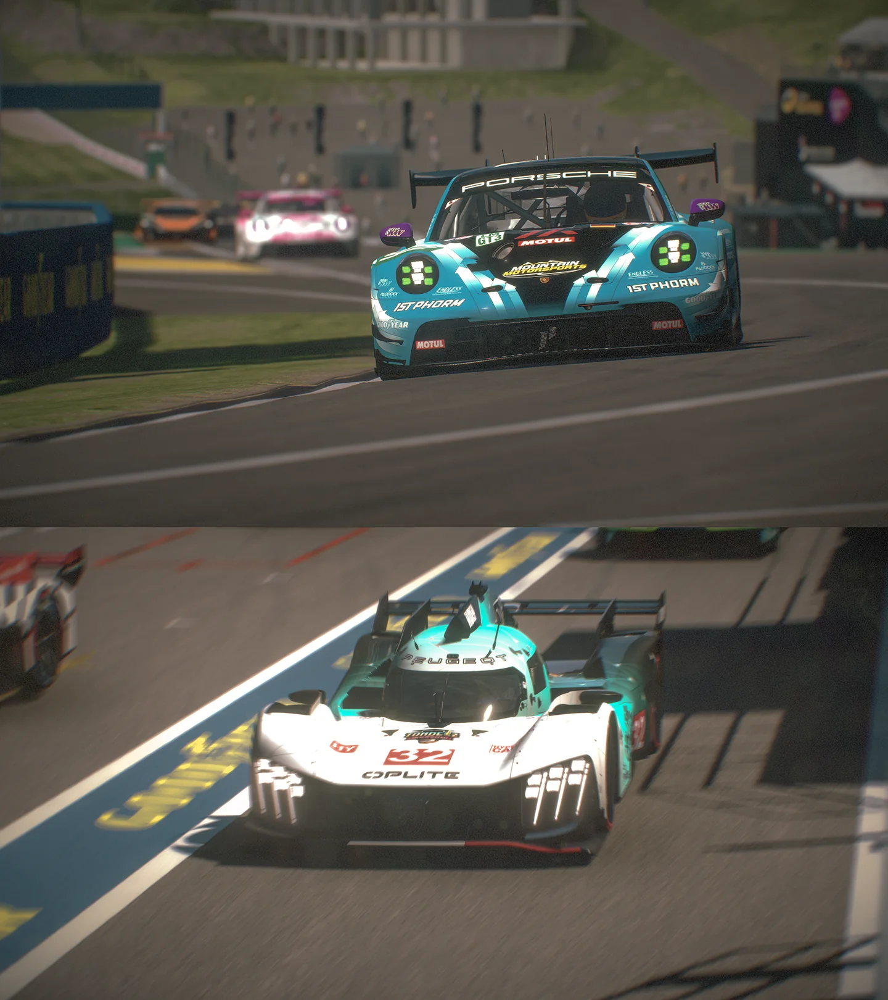
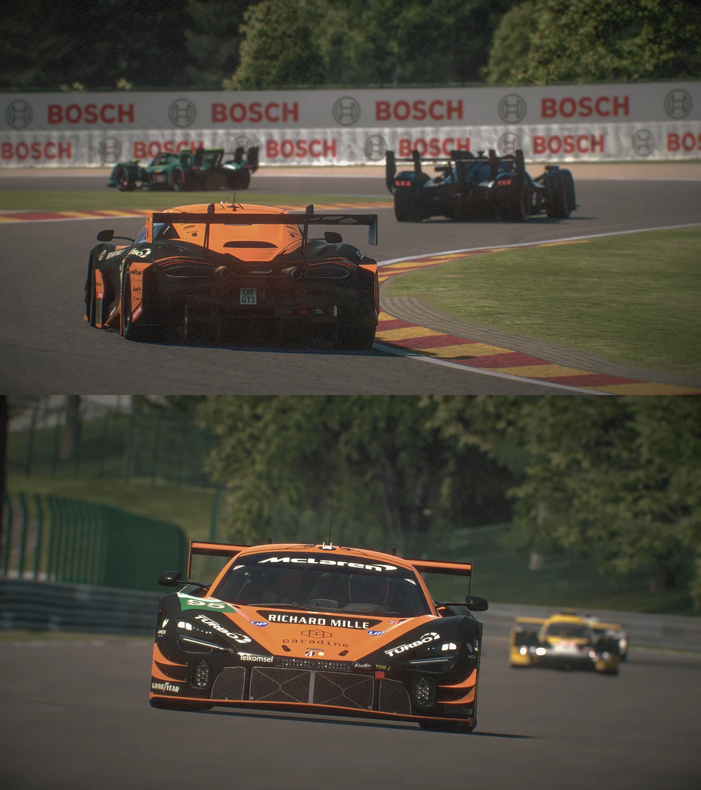

Championship
Організовані змагання з реальною спортивною напругою
Регулярні серії, спринти, ендюранс і мультикласові формати для різного рівня підготовки.
Український віртуальний автоспортивний клуб. Ми створюємо чемпіонати, забезпечуємо суддівство, проводимо прямі трансляції та об’єднуємо пілотів у сильну спортивну спільноту.
KMAMK SimRacing працює як спортивна платформа: від першої реєстрації пілота до повноцінної серії з регламентом, суддівством, медіасупроводом і партнерськими інтеграціями.

Регулярні серії, спринти, ендюранс і мультикласові формати для різного рівня підготовки.


Клуб закриває основні етапи спортивного продукту: від концепції чемпіонату й технічної підготовки до ефіру, результатів і комунікації з учасниками.
Формати серій, календарі, регламенти, реєстрація, сервери та супровід учасників.
Контроль інцидентів, спортивні рішення, live stewarding та прозорі процедури.
Прямі ефіри, коментування, графічне оформлення та інтеграція партнерів.
Discord-сервер для оголошень, реєстрацій, підтримки й спілкування пілотів.
Допомога новачкам, навчальні формати та поступовий перехід до головних серій.
Брендинг чемпіонатів, згадки в ефірах, візуальні інтеграції та спільні проєкти.
Офіційний YouTube-канал KMAMK SimRacing — це прямі трансляції чемпіонатів, архів перегонів, анонси серій і медійна платформа для клубу та партнерів.
Усі зображення в цій тестовій версії взяті з матеріалів KMAMK SimRacing, переданих для розробки сторінки.

